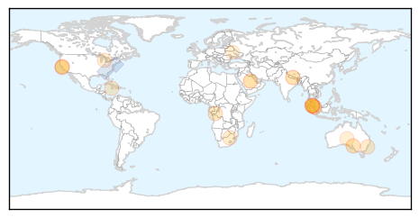
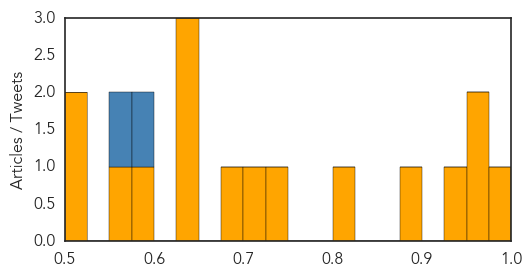

Unknown
30-Day Web Trend
0 alerts, 0 warnings

30-Day Twitter Trend
2 alerts, 0 warnings

Article Locations
Article Confidences
Top Articles:
- 0.992
- Kingdom, US join forces to defeat MERS
- 0.972
- Shigella Bacteria Infections From San Jose Seafood Restaurant Rise « CBS San Francisco
- 0.964
- Lack of screening of illegal workers handling food may be cause of KL typhoid outbreak: Minister, SE Asia News & Top Stories
- 0.927
- The typhoid tide- Nepali Times
- 0.887
- No reason to panic over typhoid outbreak – Malaysian health ministry
- 0.817
- Finding support for Q Fever
- 0.739
- Public should not panic over typhoid outbreak — subramaniam – BorneoPost Online
- 0.705
- Deadly clashes in Congo Brazzaville as protesters defy crackdown
- 0.683
- After typhoid alert, ministry says will shutter dirty eateries
- 0.640
- Where death stalks our young children
- 0.633
- Shigella Outbreak Shuts Down San Jose’s Mariscos San Juan Restaurant
- 0.628
- About 40 pupils struck with suspected norovirus after St William’s Grovely camp at YMCA Camp Warrawee
- 0.580
- Health Ministry Renews Focus on Infection Control and Sanitation
- 0.564
- Group Stereotypes Negatively Impact Health Care; Prejudice Leaves Some Patients Feeling Vulnerable
- 0.511
- Ukraine launches delayed polio vaccination drive
- 0.503
- Buffett behind insurer IAG's u-turn?
Top Tweets:
- 0.592
- A5 CDC recommends a yearly flu vaccine as the first and most important step in protecting against flu viruses IIPWChat
- 0.572
- RT: World Health Organization chief says US Saudi Arabia discussing MERS vaccine - The Times of India https://t.co/n2sVCno2q2
Ebola
30-Day Web Trend
3 alerts, 0 warnings

30-Day Twitter Trend
4 alerts, 0 warnings

Article Locations

Article Confidences

Top Articles:
- 0.999
- Italian Doctors Warn “Ebola Trojan Horse” Entering Europe via African Invaders
- 0.998
- Ebola: One Year After, FG Insists on Vigilance, Articles
- 0.997
- 1 Year After Ebola: FG Eulogises Dr Adadevoh, Global Partners, Others
- 0.993
- Chinese medical team stays in Liberia to fight Ebola
- 0.963
- Ebola Doctor Craig Spencer Thanks Caretakers At Bellevue Hospital « CBS New York
- 0.901
- Nigeria celebrates first anniversary of Ebola-free declaration
- 0.827
- NGCL Honors Juli Endee for Promoting Peace, Health and Culture
Top Tweets:
- 0.996
- UK Ebola nurse has meningitis caused by persisting Ebola -doctors - https://t.co/YZyFS3IApW ebola
- 0.996
- UK Ebola nurse has meningitis caused by persisting Ebola -doctors - https://t.co/PmG4ZOzvwZ ebola
- 0.994
- UK Ebola nurse has meningitis caused by persisting virus: doctors - https://t.co/HcLMAEDPMp ebola
- 0.992
- UK Ebola nurse has meningitis caused by persisting Ebola doctors say - https://t.co/psLkzCwkzs ebola
- 0.985
- UK Nurse with Serious Ebola Complications Has Meningitis Caused By Persisting Virus - https://t.co/z2gAgVihh0 ebola
- 0.979
- Health: Sierra Leone Addresses New Ebola Cases - https://t.co/cIaWAu7kKP ebola
- 0.970
- UK Ebola nurse has meningitis - https://t.co/iCd4TJbToi ebola
- 0.970
- Mystery deaths in Sierra Leone spread fear of Ebola relapses - Reuters https://t.co/ifr5Buyk8m ebola EVD
- 0.967
- Mystery deaths in Sierra Leone spread fear of Ebola relapses - https://t.co/dBVqDbb7sr ebola
- 0.967
- Mystery deaths in Sierra Leone spread fear of Ebola relapses - https://t.co/Ts0XOhBzKR ebola
- 0.967
- Mystery deaths in Sierra Leone spread fear of Ebola relapses - https://t.co/35HZpX1Thd ebola
- 0.960
- Ebola nurse Pauline Cafferkey has meningitis caused by virus - https://t.co/v7Wfagft12 ebola
- 0.958
- UK Ebola nurse Cafferkey suffering from meningitis not relapse - CNN https://t.co/OzChZtw7el ebola EVD
- 0.958
- British Nurse Better After Ebola Complications Cause Meningitis - https://t.co/2rT4gIBjrE ebola
- 0.957
- Erratum: Genetic diversity and evolutionary dynamics of Ebola virus in Sierra Leone - https://t.co/uA3uPt1FQH ebola
- 0.955
- UK Ebola nurse Cafferkey suffering from meningitis not relapse - https://t.co/zRMoUCfTxW ebola
- 0.950
- Cambuslang Ebola nurse Pauline continues to fight off the deadly virus - https://t.co/wK1It1rUcC ebola
- 0.933
- Doctors: Scots Ebola nurse Pauline Cafferkey has meningitis - https://t.co/aFa18XsDxK ebola
- 0.931
- Sick British Ebola nurse 'much better': hospital - https://t.co/o1gloBcpUd ebola
- 0.909
- Scottish Ebola nurse now on the mend after battling meningitis - https://t.co/nibNb8Un03 ebola
- 0.906
- Ebola caused meningitis in nurse Pauline Cafferkey - https://t.co/Ci8OpoYKFt ebola
- 0.905
- Nurse Pauline Cafferkey suffering from meningitis caused by Ebola - https://t.co/vGvh30m82W ebola
- 0.897
- Doctor reunites with hospital staff that treated him for Ebola - https://t.co/b1WLce9iT3 ebola
- 0.895
- Sick British Ebola nurse 'much better' - https://t.co/d0XN0K3SAx ebola
- 0.892
- Texas Health Resources appeals judge's order in Ebola nurse Nina Pham's lawsuit - Dallas Morning N... https://t.co/pU4acEIBoX ebola EVD
- 0.890
- UIC helps protect health care workers from Ebola new diseases - https://t.co/bvhQ2zZ0T1 ebola
- 0.877
- Pauline Cafferkey has meningitis caused by Ebola - https://t.co/EKS4GpL83l ebola
- 0.875
- Gilead Developing Ebola Drug - Nasdaq https://t.co/2eqyd4F02K ebola EVD
- 0.868
- Ebola - https://t.co/VXl2LbE8Ga ebola
- 0.867
- Mysterious deaths raise fears of Ebola relapse - Reuters https://t.co/LE3wL0fLia ebola EVD
- 0.861
- Ebola nurse Pauline Cafferkey makes "significant improvement" against virus - https://t.co/d5BBUhj0JK ebola
- 0.860
- UK doctors say nurse suffering Ebola relapse has improved - https://t.co/t3vrsgPW06 ebola
- 0.860
- UK doctors say nurse suffering Ebola relapse has improved - https://t.co/0Iq336dTE2 ebola
- 0.854
- Ebola nurse Pauline Cafferkey nearly died from meningitis doctors say - The Guardian https://t.co/2tguM58nSB ebola EVD
- 0.853
- Ebola: 1 Guinea case only tested after death; case detection failed. Are people hiding the sick? Potential for more cases from these. 3/3
- 0.851
- Marking Global Handwashing Day in Ebola-Impacted Sierra Leone - https://t.co/0WABwDNe5Q ebola
- 0.850
- Ebola: Meningitis risk must be on radar - https://t.co/Ere5xbhwhp ebola
- 0.846
- Gilead Developing Ebola Drug - https://t.co/Lon5ZwUGhc ebola
- 0.835
- Nurse With Ebola Improves Significantly - https://t.co/nR6QSUa532 ebola
- 0.834
- UK hospital caring for Ebola nurse to give details of her case - https://t.co/Np1NCZm6xF ebola
- 0.834
- UK hospital caring for Ebola nurse to give details of her case - https://t.co/1RDILAHBWG ebola
- 0.814
- Can Ebola Survive in a Man's Semen? - https://t.co/v9gffqavVL ebola
- 0.802
- Nigeria to set up clinic for Ebola survivor - https://t.co/TQMtn4wlr5 ebola
- 0.799
- Ebola doctor visits NY hospital staff who cared for him - https://t.co/yTssWdJPUv ebola
- 0.799
- Ebola doctor visits NY hospital staff who cared for him - https://t.co/KiaenIkTCI ebola
- 0.791
- Ebola-Hit Nurse Makes Significant Improvement - https://t.co/dbXotgknU0 ebola
- 0.790
- Ebola nurse Pauline Cafferkey diagnosed with meningitis as a result of new infection - but her ... - https://t.co/H09tHxZxj9 ebola
- 0.786
- Ebola nurse Pauline Cafferkey: Hospital news briefing - https://t.co/qZQGfrccw5 ebola
- 0.778
- Gilead Confirms It Is Developing Ebola Drug - https://t.co/UcXycrHAMN ebola
- 0.771
- Ebola doctor visits NY hospital staff who cared for him - CT Post https://t.co/LUStISe57s ebola EVD
Showing top 50 tweets...